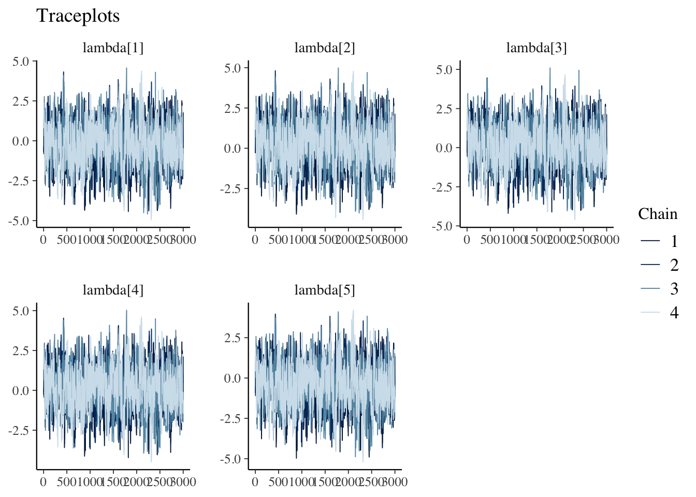
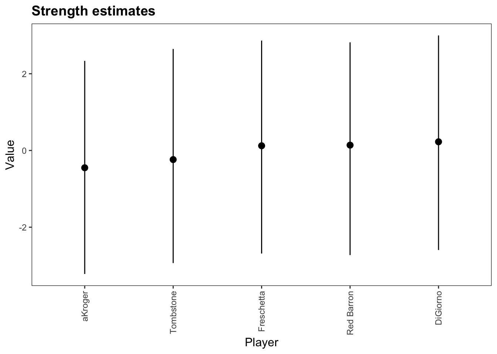

Chapter 2 Basic functionality
Although a large overview of the functionality of the bpcs is available in the official documentation (https://davidissamattos.github.io/bpcs) we provide here a short example based on the paper:
Luckett, Curtis R., Sara L. Burns, and Lindsay Jenkinson. “Estimates of relative acceptability from paired preference tests.” Journal of Sensory Studies 35.5 (2020): e12593.
2.1 Reading and preparing the data
This paper analyzes food preferences using paired comparisons (and compare different methods). The original data was made available in the paper and it can be found in the link:
Below we see a fragment of how the dataset looks like:
sample_n(d, size=5) %>%
kable(caption="Example of the pizza data frame") %>%
kableExtra::kable_styling(bootstrap_options = c("striped", "hover", "condensed", "responsive"))| Prod1 | Prod2 | Win1 | Win2 |
|---|---|---|---|
| Tombstone | Red Barron | 16 | 21 |
| Freschetta | DiGiorno | 20 | 18 |
| aKroger | Tombstone | 17 | 23 |
| Freschetta | Tombstone | 22 | 16 |
| DiGiorno | aKroger | 26 | 13 |
This data is in a aggregated format. That is each row contains more than one observation. For example, the first row shows that Tombstone was voted 16 times against Red Barron and Red Barron was voted 21 times against Tombstone
To use with the bpcs package, we need to expand it to a single contest per row, in a long format. We can use the function expand_aggregated_data of the bpcs package exactly for this purpose.
This leads to a data frame with 380 rows (same number of wins for 1 and 2). This function adds an id column to the data, so each row is uniquely represented (important if you will do some transformations later). Below we examplify how the expanded data looks like
dpizza <- expand_aggregated_data(d = d, player0 = 'Prod1', player1 = 'Prod2', wins0 = 'Win1', wins1 = 'Win2', keep=NULL)
# renaming the columns
colnames(dpizza) <- c('Prod0','Prod1', 'y', 'contest_id')
# creating a short table to exemplify
sample_n(dpizza, size = 10) %>%
kable(caption = 'Sample of the expanded pizza data set') %>%
kableExtra::kable_styling(bootstrap_options = c("striped", "hover", "condensed", "responsive")) %>%
kableExtra::scroll_box(width = "100%")| Prod0 | Prod1 | y | contest_id |
|---|---|---|---|
| aKroger | Red Barron | 1 | 362 |
| Freschetta | DiGiorno | 1 | 226 |
| DiGiorno | Red Barron | 0 | 128 |
| aKroger | Red Barron | 1 | 358 |
| Red Barron | Freschetta | 0 | 269 |
| Tombstone | Red Barron | 1 | 20 |
| DiGiorno | Tombstone | 1 | 68 |
| Freschetta | aKroger | 1 | 265 |
| Freschetta | DiGiorno | 0 | 210 |
| DiGiorno | aKroger | 0 | 88 |
2.2 The Bayesian Bradley-Terry analysis
Now that we have the data in the correct format we can use bpcs package to model the Bayesian Bradley-Terry Model. It is a good practice to save the result fitted model in a file right after sampling. Some models might take several minutes to fit and you probably don’t want to keep re-fitting the model always. After saving you can just read the model and continue your analysis instead of re-fitting. The save_bpc_model is a wrapper function around the saveRDS function with a few smaller checks. Few free to use any. To read you can use the load_bpc_model or the readRDS functions.
Let’s run the simplest Bayesian Bradley-Terry model:
m <- bpc(data = dpizza,
player0 = 'Prod0',
player1 = 'Prod1',
result_column = 'y',
solve_ties = 'none',
model_type = 'bt',
iter=3000,
show_chain_messages = T)
save_bpc_model(m, 'pizza','./fittedmodels')To load:
2.2.1 Diagnostics
After sampling, we can investigate the convergence of the model and the predictive posterior with shinystan.
Convergence checks are already available in the fitted model, but for the posterior checks we need to first calculate the posterior predictive values with the posterior_predictive function. This function returns a list with two values, the y (original fitted values) and the y_pred (posterior predictve). Both are in the correct format to use with shinystan.
We save them to the global environment and then we load it in shinystan directly (through the GUI).
Since everything looks fine we can proceed with the analysis.
Alternatively, as a quick check we can use:
## Processing csv files: /Users/xramor/OneDrive/2021/bpcs-online-appendix/.bpcs/bt-202109130834-1-07951d.csv, /Users/xramor/OneDrive/2021/bpcs-online-appendix/.bpcs/bt-202109130834-2-07951d.csv, /Users/xramor/OneDrive/2021/bpcs-online-appendix/.bpcs/bt-202109130834-3-07951d.csv, /Users/xramor/OneDrive/2021/bpcs-online-appendix/.bpcs/bt-202109130834-4-07951d.csv
##
## Checking sampler transitions treedepth.
## Treedepth satisfactory for all transitions.
##
## Checking sampler transitions for divergences.
## No divergent transitions found.
##
## Checking E-BFMI - sampler transitions HMC potential energy.
## E-BFMI satisfactory.
##
## Effective sample size satisfactory.
##
## Split R-hat values satisfactory all parameters.
##
## Processing complete, no problems detected.Traceplots
draws<- m$fit$draws(variables = c('lambda'))
mcmc_trace(posterior::as_draws(draws)) +
labs(title="Traceplots")
2.2.2 Summary information
The summary function in the command line provides some tables that help understand the model, such as the summary of the parameters, the probability of winning, and the ranking table.
## Estimated baseline parameters with 95% HPD intervals:
##
## Table: (\#tab:unnamed-chunk-11)Parameters estimates
##
## Parameter Mean Median HPD_lower HPD_higher
## ------------------- ------ ------- ---------- -----------
## lambda[Tombstone] -0.24 -0.19 -2.93 2.65
## lambda[DiGiorno] 0.23 0.27 -2.59 3.00
## lambda[Freschetta] 0.12 0.16 -2.69 2.86
## lambda[Red Barron] 0.14 0.17 -2.73 2.82
## lambda[aKroger] -0.45 -0.41 -3.22 2.34
## NOTES:
## * A higher lambda indicates a higher team ability
##
## Posterior probabilities:
## These probabilities are calculated from the predictive posterior distribution
## for all player combinations
##
##
## Table: (\#tab:unnamed-chunk-11)Estimated posterior probabilites
##
## i j i_beats_j j_beats_i
## ----------- ----------- ---------- ----------
## aKroger DiGiorno 0.45 0.55
## aKroger Freschetta 0.33 0.67
## aKroger Red Barron 0.39 0.61
## aKroger Tombstone 0.39 0.61
## DiGiorno Freschetta 0.53 0.47
## DiGiorno Red Barron 0.57 0.43
## DiGiorno Tombstone 0.71 0.29
## Freschetta Red Barron 0.59 0.41
## Freschetta Tombstone 0.64 0.36
## Red Barron Tombstone 0.55 0.45
##
## Rank of the players' abilities:
## The rank is based on the posterior rank distribution of the lambda parameter
##
## Table: (\#tab:unnamed-chunk-11)Estimated posterior ranks
##
## Parameter MedianRank MeanRank StdRank
## ----------- ----------- --------- --------
## DiGiorno 1 1.66 0.78
## Freschetta 2 2.28 0.85
## Red Barron 2 2.17 0.87
## Tombstone 4 4.06 0.54
## aKroger 5 4.83 0.39The presented tables can also be obtained individually as data frame. Additionally, for all of them it is possible to obtain the posterior distribution.
The package has some publication-ready functions to create plots and tables. The format option can set it to latex, html, pandoc etc.
Parameters with HPDI
| Parameter | Mean | Median | HPD_lower | HPD_higher |
|---|---|---|---|---|
| lambda[Tombstone] | -0.237 | -0.193 | -2.935 | 2.646 |
| lambda[DiGiorno] | 0.226 | 0.271 | -2.594 | 2.998 |
| lambda[Freschetta] | 0.122 | 0.162 | -2.686 | 2.864 |
| lambda[Red Barron] | 0.139 | 0.170 | -2.726 | 2.818 |
| lambda[aKroger] | -0.450 | -0.405 | -3.219 | 2.336 |
Probabilities
get_probabilities_table(m, format='html', caption='Probability of selectiig a brand of pizza over the other')| i | j | i_beats_j | j_beats_i |
|---|---|---|---|
| aKroger | DiGiorno | 0.35 | 0.65 |
| aKroger | Freschetta | 0.34 | 0.66 |
| aKroger | Red Barron | 0.30 | 0.70 |
| aKroger | Tombstone | 0.47 | 0.53 |
| DiGiorno | Freschetta | 0.55 | 0.45 |
| DiGiorno | Red Barron | 0.52 | 0.48 |
| DiGiorno | Tombstone | 0.69 | 0.31 |
| Freschetta | Red Barron | 0.50 | 0.50 |
| Freschetta | Tombstone | 0.54 | 0.46 |
| Red Barron | Tombstone | 0.60 | 0.40 |
Rank
| Parameter | MedianRank | MeanRank | StdRank |
|---|---|---|---|
| DiGiorno | 1 | 1.690 | 0.805 |
| Freschetta | 2 | 2.320 | 0.826 |
| Red Barron | 2 | 2.091 | 0.847 |
| Tombstone | 4 | 4.065 | 0.556 |
| aKroger | 5 | 4.834 | 0.378 |
Plot

We can also obtain information criteria to compare different models that fit the same data.
Below we show how to obtain the WAIC and the LOO-CV
##
## Computed from 12000 by 380 log-likelihood matrix
##
## Estimate SE
## elpd_waic -259.8 3.9
## p_waic 4.1 0.1
## waic 519.6 7.8##
## Computed from 12000 by 380 log-likelihood matrix
##
## Estimate SE
## elpd_loo -259.8 3.9
## p_loo 4.1 0.1
## looic 519.6 7.8
## ------
## Monte Carlo SE of elpd_loo is 0.0.
##
## All Pareto k estimates are good (k < 0.5).
## See help('pareto-k-diagnostic') for details.This chapter show some basic functionality of the package. The next chapters will show how to apply these functions to solve more interesting and complex problems. We also recommend checking the package documentation at: https://davidissamattos.github.io/bpcs/index.html